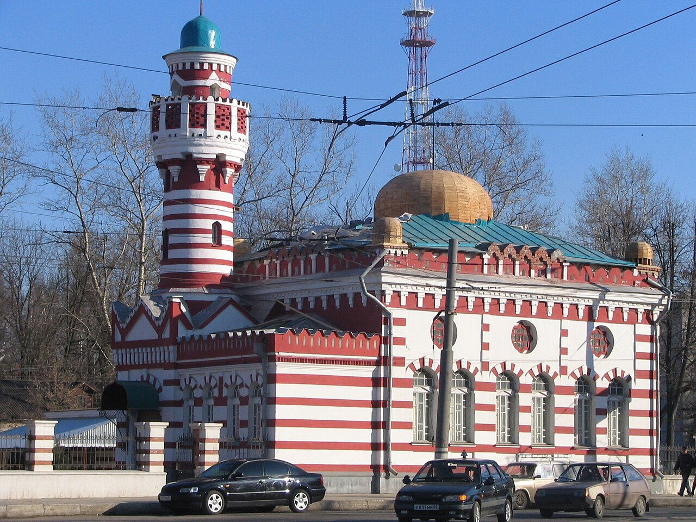
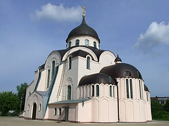
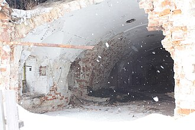
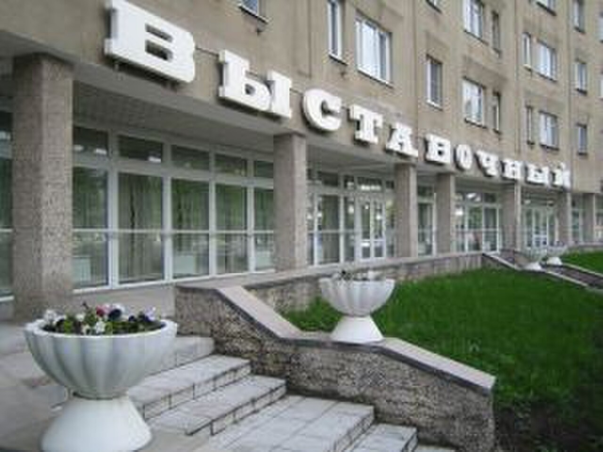
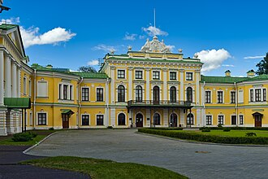
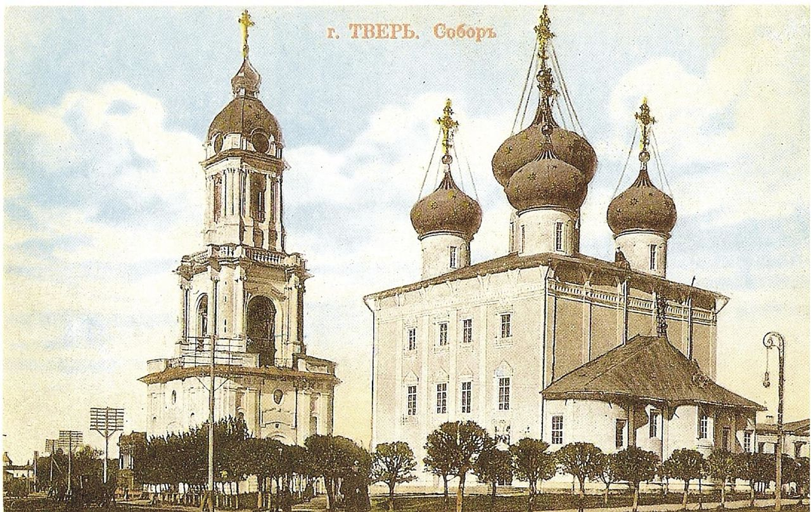
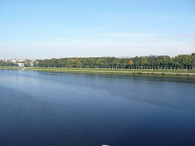
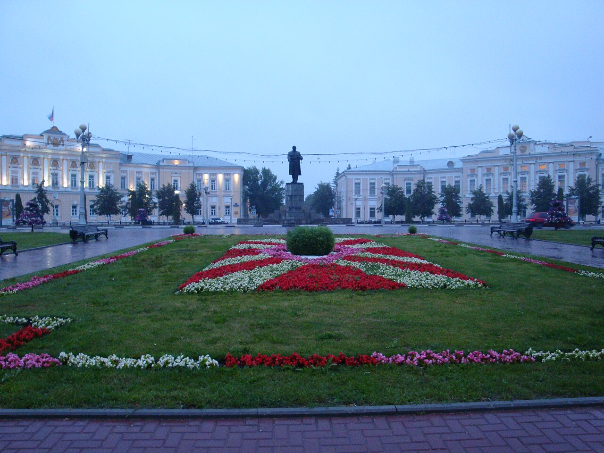

Historical and reference coats of arms


Tver
Guide. Places in this edition: 36.
OTIUM is the practice of deliberate leisure. In the classical sense, otium is not escape from work but time when attention returns to memory, landscape, and thought — without a utilitarian deadline.
We shape routes for lingering, not for checklist tourism. The goal is presence in a place rather than consumption of sights.
OTIUM is not a tour operator. It is an invitation to walk, pause, and leave a route unfinished if the light on a façade deserves another minute.
Historical and reference coats of arms
Guide. Places in this edition: 36.
Tver lies between Moscow and Saint Petersburg on the upper Volga, an old principality town turned regional capital.
Medieval rivalry with Moscow, imperial roads, and Soviet industry left a mixed fabric of embankments, churches, and transport corridors. It remains a practical gateway and a keeper of regional memory.
Imperial and Soviet eras reinforced roads and light industry; the Great Patriotic War left scars. Tver today emphasises corridors between Moscow and Saint Petersburg while recalling medieval rivalry with the growing Muscovite state.

In the heart of Tver's historic center stands a solemn and elegant statue commemorating Afanasy Nikitin, a renowned explorer who traveled to India in the late 15th century. The statue depicts Afanasy Nikitin standing confidently, holding his journal, symbolizing his intellectual curiosity and exploration. Igor Zolotov's design captures the essence of the era through meticulous attention to detail, blending traditional Russian styles with modern aesthetics. Located near the Kremlin Square, it attracts both tourists and locals seeking inspiration from Tver’s rich heritage. The monument was unveiled during celebrations marking the 550th anniversary of Nikitin's famous voyage. It stands as one of the most iconic landmarks in Tver, showcasing the city's dedication to preserving its historical legacy.
Erected in 2008, the Afanasy Nikitin Monument honors the memory of the intrepid traveler whose journeys laid the groundwork for Russia's early connections with Asia. The sculpture was created by artist Igor Zolotov and is notable for its intricate detailing and realistic portrayal of the explorer. This monument serves as a reminder of Tver’s historical significance as a gateway to Eastern trade routes and cultural exchange.

Perched on a hilltop overlooking Tver's historic center, the Borisoglebsky Monastery is one of Russia's most significant Orthodox Christian sites. Established during the late 16th century, it has been a symbol of faith and cultural heritage for centuries. The monastery was consecrated in 1594 under Tsar Boris Godunov, after whom it was named. It features several notable architectural elements including the Cathedral of St. Today, the monastery remains an active site of worship and continues to play a vital role in the local community. Its location provides panoramic vistas of Tver City, making it a popular spot for photography enthusiasts. In recent years, the monastery has undergone extensive restoration work to preserve its historical integrity.
Founded in the late 16th century by Tsar Ivan IV, also known as Ivan the Terrible, the monastery was originally constructed to protect the region against marauding Tatar raids. Over time, it became a spiritual hub, hosting numerous religious festivals and attracting pilgrims from across Russia. Its architecture reflects traditional Russian design with distinctive domes and towers. Visitors come here to experience the solemn atmosphere and breathtaking views of the surrounding landscape, offering a rare glimpse into Russia’s rich historical and religious traditions.

City Garden Tver is a charming urban oasis nestled within the bustling center of the city. This picturesque park offers tranquil walks amidst manicured lawns and serene ponds, providing a peaceful escape for locals and visitors alike. Established in the early 1800s as a private garden. Features elegant classical architecture and formal gardens. Hosted numerous cultural festivals and concerts annually. Located near major landmarks such as the Kremlin Square. Contains several sculptures and memorials commemorating notable figures.
Originally designed in the early 19th century, City Garden has evolved over time to become one of Tver's most beloved green spaces. It was once a private estate before being opened to the public, showcasing elegant landscaping and historical monuments that reflect its rich heritage. Visitors come here to enjoy the scenic beauty, relax on benches under shady trees, and participate in cultural events held throughout the year.

Perched high above the Tver River valley, the Fire Observation Tower offers a breathtaking view of the city's panorama and surrounding forests. Built to safeguard against wildfires, it stands as both a symbol of vigilance and a vantage point for appreciating nature's beauty. The tower is located near the confluence of the Volga and Tver Rivers. It provides panoramic views extending up to 40 kilometers. Visitors can climb the spiral staircase to reach the top platform. Built using traditional wooden construction techniques, it blends seamlessly with its surroundings. Regular maintenance ensures that the structure remains safe and accessible.
Constructed during the early 20th century, the tower was originally designed to monitor forest fires and ensure timely intervention. Over time, its significance evolved into a popular tourist attraction, drawing visitors who come to admire the scenery and reflect on the region’s natural heritage. Visit the Fire Observation Tower to enjoy unobstructed views of Tver's landscapes and gain insight into the area's ecological importance.

The Mosque of Tver is a significant religious site located in the historic center of the city, reflecting the cultural diversity and heritage of its inhabitants. Constructed around 1910, making it one of the oldest mosques in Russia's northwestern region. Features intricate woodwork and mosaics typical of Russian-Muslim architecture. Offers guided tours providing explanations of Islamic traditions and customs. Adjacent to the historical Kremlin walls, adding to its significance as a cultural landmark. Hosting annual festivals celebrating Islamic holidays such as Ramadan and Eid.
Built during the early 20th century, the mosque has been a symbol of Muslim community life in Tver for decades. Originally constructed as part of a larger complex, it serves as a focal point for worship and social gatherings within the city's diverse population. Visiting the Mosque provides insight into the multicultural fabric of Tver and offers a chance to appreciate the architectural beauty of traditional Islamic design.

The Museum of Tver Life offers a fascinating journey through the cultural and historical heritage of Tver, showcasing artifacts, exhibits, and stories that reflect the evolution of the region's identity. Founded in [YEAR]. Houses over 40,000 objects and artifacts. Features permanent exhibitions on local craftsmanship and traditional lifestyles. Regularly hosts temporary exhibits exploring various aspects of Tver’s history. Located in a historic building dating back to the early 19th century.
Established in [YEAR], the museum was originally designed to preserve and display items related to local customs, traditions, and daily life. Over time, it has expanded its collection to include regional art, folklore, and archaeological finds, making it a significant repository of Tver’s past. Visiting the Museum of Tver Life allows visitors to gain insight into the rich cultural tapestry and historical development of one of Russia’s oldest cities.

The Old Volga Bridge is a historic landmark spanning the wide waters of the Volga River, connecting Tver's old town with its modern district. Constructed in 1824, it is one of the oldest surviving bridges in Russia. It features neoclassical architecture with elegant arches and stone pillars. The bridge spans approximately 300 meters across the river. Today, pedestrians can walk along the bridge enjoying scenic walks and photo opportunities. Nearby attractions include the Tver Kremlin and Museum of Local Lore.
Built in the early 19th century, the bridge was originally constructed as part of the Tsar's grand plan to link Tver with Moscow and St. Pyotrsburg. It served as a vital transportation route for centuries, facilitating trade and travel between these major cities. The bridge has undergone several renovations over time but retains much of its original architectural charm. Visitors come here to appreciate the bridge's historical significance and enjoy panoramic views of the Volga River.

Step back in time at the Old Volga Steamship Museum, where vintage riverboats and antique engines tell the story of Tver's rich maritime heritage. The museum showcases over 40 historic steamships and boats. One of its highlights is the fully restored 'Svetlana', a classic passenger steamer. Visitors can explore the interior of several ships, including cabins and engine rooms. Exhibits also include vintage navigation instruments and personal belongings of notable passengers. Regular events such as reenactments and boat tours are held throughout the year.
Established in the early 20th century, the museum preserves the legacy of Russia's golden age of river travel. Its collection includes iconic steamships that once plied the Volga River, offering a glimpse into bygone eras when these vessels were essential for trade and transportation. Visit to appreciate the cultural significance of Tver’s waterways and to experience the nostalgia of old-time river travel.

The Pushkin Monument in Tver is a notable sculpture that stands as a tribute to the great Russian poet Alexander Pushkin, whose works have influenced generations of readers and writers. Completed in 1969 during the Soviet era, the monument reflects the importance placed on celebrating national culture and literature. The artist responsible for the design and execution of the sculpture remains uncredited in official records. Located in Tverskaya Square, the monument provides a scenic vantage point overlooking the historic center of the city. It is part of a larger ensemble of monuments dedicated to famous figures from Tver's past. The monument has been restored several times since its initial installation.
Built in 1969, the monument was commissioned to honor the literary legacy of Alexander Pushkin, one of Russia's most celebrated poets. Located prominently in the city's central square, it serves as both a historical landmark and a cultural icon for locals and visitors alike. The statue depicts Pushkin standing with his hands behind his back, looking out over the city, symbolizing his enduring influence on Russian literature. Visiting the Pushkin Monument allows travelers to connect with the rich literary heritage of Tver and gain insight into the life and work of one of Russia’s greatest authors.

The Resurrection Cathedral on the Volga embankment in Tver is a 19th-century neo-Byzantine landmark rebuilt after wartime damage, with a prominent dome visible from the river.

Built during the late 19th century, it stands as one of the city's most notable landmarks. It features neo-Russian architectural style with elements of Byzantine influence. The interior boasts exquisite mosaics and frescoes created by renowned artists. The cathedral has been listed as a historical monument since 1991. Services are held regularly, offering visitors an opportunity to participate in Orthodox worship. Its bell tower offers panoramic views of the surrounding area.
Constructed between 1876 and 1894, the cathedral was designed by architect Ivan Baranovsky to commemorate the resurrection of Christ. It served as a symbol of religious revival and cultural pride for the region's inhabitants. Visitors come here to admire its intricate architecture and the serene atmosphere within its walls.

The Resurrection Cathedral in Tver is a solemn Orthodox church standing majestically on the banks of the Volga River. Built in the late 19th century, it dominates the city's skyline with its neo-Russian architecture and golden domes. It features elaborate frescoes and icons painted by renowned artists of the time. Its distinctive gold-domed cupola reflects sunlight brilliantly, especially at sunset. Located near the historic Kremlin, it offers visitors a glimpse into the city's rich historical past. The cathedral's bells are among the largest in Russia, weighing several tons each. During special services, the acoustics within the building create a unique spiritual ambiance.
It originally served as a focal point for religious life in Tver until being closed during Soviet times. Today, it has been restored and reopened as a place of worship and cultural heritage. Visitors come here to admire the intricate details of its interior, enjoy panoramic views over the Volga, and experience the serene atmosphere typical of traditional Russian churches.

A solemn and serene Orthodox church standing tall on the banks of Tver River, Saint Catherine Church is a testament to Russia's rich religious heritage. Constructed between 1716 and 1724. Designed by architect Ivan Zarudnyi. Features intricate carvings and decorative elements typical of Russian Baroque. Restored in the 1990s following extensive renovations. Located near the historic center of Tver.
Built in the early 18th century during the reign of Pyotr the Great, Saint Catherine Church was originally dedicated to Saint Catherine of Alexandria. It served as a focal point for religious life in Tver until its restoration in the late 20th century after years of neglect. Visitors come here to appreciate its elegant Baroque architecture and peaceful atmosphere.

Built in the late 17th century, Saint Mikhail Church is a prominent example of Baroque architecture in Tver. Its domes and towers dominate the city's skyline. The church's distinctive design features three cupolas with golden domes. It underwent significant restoration work in the early 20th century after being damaged by fire. Adjacent to the church is a small but picturesque park where locals gather for leisure activities. During special occasions, the interior of the church hosts vibrant Orthodox services that attract both tourists and believers. In recent years, it has become a popular venue for weddings and cultural events.
Constructed during the reign of Tsar Pyotr I, the church was consecrated to honor Saint Mikhail the Archangel. It served as a symbol of religious devotion and cultural pride for local residents. Visitors come here to admire its architectural beauty and historical significance, as well as to experience the tranquility of the surrounding park area.

The Smolensk Cathedral is a majestic Orthodox church located on the banks of the Volga River, symbolizing Tver's rich religious heritage and architectural beauty. Constructed in the mid-1700s following a design by architect Vasily Nikitin. Its exterior features ornate Baroque facades with sculptural reliefs depicting biblical scenes. Internally, it houses a collection of historic icons and frescoes dating back to the 18th century. It was reconstructed multiple times due to fires and natural disasters. Today, it remains an active place of worship and cultural landmark.
Built in the early 18th century during Pyotr the Great's reign, the cathedral was originally constructed as a modest wooden structure but later rebuilt in stone after a fire. It has undergone several renovations over the centuries, preserving its Baroque style and traditional iconography. The cathedral played a significant role in local religious life, hosting important ceremonies and serving as a spiritual center for generations. Visitors come to admire its elegant Baroque architecture and intricate interior decorations, which reflect Russia’s vibrant cultural traditions.

The Smolensk Cathedral is a solemn and venerable Orthodox church located in the heart of Tver's historic center. It stands as one of the city's most notable landmarks, blending historical significance with architectural elegance. Constructed in the late 1600s, the Smolensk Cathedral reflects the Baroque architecture typical of that era. It houses valuable icons and relics dating back centuries, making it a significant religious site for locals and tourists alike. The cathedral underwent extensive restoration work in the early 20th century, ensuring its preservation for future generations. Its bell tower offers panoramic views of Tver's old town, providing visitors with a breathtaking visual experience. Regular services are held here, allowing visitors to witness authentic Orthodox worship rituals.
Built in the late 17th century during the reign of Tsar Alexis Mikhailovich, the cathedral was originally constructed to commemorate the victory over Polish forces at the Battle of Smolensk. Over time, it has undergone several renovations and restorations, preserving its unique Baroque style and traditional iconography. Visitors come here to appreciate its rich history, architectural beauty, and spiritual atmosphere.

Soviet Square is a central gathering place in Tver, showcasing the city's Soviet heritage and architectural legacy. The square features several notable landmarks including the Lenin Monument and the Palace of Culture. It hosts annual festivals and commemorative events celebrating local history and culture. Surrounding streets are lined with Soviet-era apartment blocks and administrative buildings. The square has undergone recent renovations to enhance pedestrian accessibility and maintain its historical integrity. A small park area provides green space for relaxation and recreation.
Established during the Soviet era, Soviet Square was originally named after Vladimir Lenin. It served as a symbolic heart of the city, hosting major political rallies and cultural events. The square's design reflects typical Soviet urban planning with wide streets, monumental buildings, and open spaces for mass gatherings. Visitors can explore the historical significance of Tver's Soviet past while enjoying its well-preserved architecture and open-air atmosphere.
Tgmvc

The Tgmvc Museum showcases the rich cultural heritage of Tver through its extensive collection of local artifacts and historical exhibits. Founded in [FOUNDING YEAR], the museum is one of the oldest institutions dedicated to preserving Tver’s cultural legacy. It houses over [NUMBER] artifacts dating back centuries, offering insight into daily life and societal structures. The museum regularly hosts special exhibitions highlighting lesser-known aspects of Tver's history and artistry. Located in a historic building constructed during the [ARCHITECTURAL PERIOD], the museum itself is a testament to architectural excellence.
Established in [YEAR], the museum was originally designed to preserve and display the significant historical artifacts and relics of Tver's past. Over time, it has become a vital hub for studying regional culture and traditions, attracting visitors who seek to understand the city's evolution and its unique identity. Visitors come here to explore the intricate details of Tver's history and learn more about the region's customs and traditions.

Located on the banks of the Volga River, Travel Palace is Tver's premier cultural and historical landmark. Originally constructed as a summer residence for local nobility during the late 18th century, it later became a symbol of Tsarist Russia's architectural prowess. Constructed using white limestone imported from St. Features intricate interior decorations with ornate stucco work and frescoes. Listed as a UNESCO World Heritage Site since 2014. Hosted numerous royal balls and state receptions throughout its history. Contains a collection of antique furniture and paintings from the early 19th century.
Built between 1790 and 1800, the palace was designed by renowned architect Ivan Starov to emulate European Baroque style. Over time, it served various purposes including a museum, art gallery, and government office before being restored to its former glory in recent years. A must-visit destination for anyone interested in exploring Tver’s rich heritage and architectural wonders.

Located on the banks of the Volga River, Travel Palace is a grand architectural landmark that exudes elegance and historical significance. Constructed in the early 1800s. Features neoclassical design elements. Serves as a venue for special events and concerts. Surrounded by picturesque gardens. Offers panoramic views of the Volga River.
Built during the early 19th century, the palace was originally constructed as a summer residence for local nobility. Over time, it became a cultural hub, hosting numerous social gatherings and performances. Its neoclassical architecture reflects the taste and refinement of its era. Today, Travel Palace stands as a testament to Russia's rich cultural heritage and offers visitors a glimpse into the past while providing a serene setting for relaxation and reflection.

Trekhsvyatskaya Street is one of the oldest and most picturesque streets in Tver, showcasing traditional wooden architecture and charming cobblestone alleys. The street features some of the best-preserved examples of traditional Russian wooden architecture. It is known for its narrow cobblestone paths and charmingly decorated facades. Many buildings date back to the early 19th century, offering a glimpse into Tver’s heritage. Today, it attracts tourists looking for a tranquil escape from bustling city life. Local residents often gather here for leisure walks and social gatherings.
Originally laid out in the late 18th century, Trekhsvyatskaya Street was named after nearby churches dedicated to the Holy Trinity. It became a hub for local craftsmen and traders, with its narrow lanes lined by colorful houses painted in pastel hues. Over time, it evolved into a cultural landmark, reflecting the historical development of Tver's urban landscape. Visitors come here to experience the authentic atmosphere of old Russia, with quaint shops, cozy cafes, and scenic views along the street.

The Tver Carriage Yard is a historic hub of transportation and industry, nestled within the heart of Russia's cultural capital. Originally constructed as a major rail depot during the late 19th century, it has since evolved into a symbol of industrial heritage. Constructed around 1870, making it one of the oldest operational carriage yards in Russia. Hosted numerous historical events related to train transport and industrial progress. Currently home to several preserved antique vehicles dating back to the early 20th century. Serves as a museum and educational center for understanding Russia's industrial history. Located near key tourist attractions such as Tver Kremlin and Ivanovsky Monastery.
Established in the late 1800s, the Tver Carriage Yard served as a crucial node for train maintenance and repair. Over time, its importance grew as trains became essential to the country's economic development. Today, visitors can still see remnants of its former glory, including vintage locomotives and railway cars that tell stories of bygone eras. Visiting the Tver Carriage Yard offers a unique glimpse into Russia’s rich industrial past while showcasing the evolution of modern transportation technology.

The Tver Drama Theatre is a venerable cultural institution nestled in the heart of Russia's historical capital, known for its rich heritage and elegant architecture. Located on [ADDRESS]. Notable for its neoclassical architectural style. Regularly hosts both classical and contemporary plays. Renowned for its talented ensemble of actors and directors.
Established in [YEAR], the Tver Drama Theatre has been a cornerstone of local culture since its inception. It played a pivotal role in shaping the artistic landscape of Tver, hosting numerous performances that have entertained generations of locals and visitors alike. Over the years, it has become renowned for its innovative productions and dedication to preserving traditional theatrical arts. Visitors should experience the Tver Drama Theatre to immerse themselves in the city's vibrant cultural scene and witness world-class performances.

The Tver Puppet Theatre is a charming venue where imaginative stories come to life through puppetry and theater magic. Founded in 1964 as one of Russia's oldest puppet theaters. Located in the heart of Tver's historical center. Features both traditional marionette shows and modern multimedia presentations. Regularly hosts international festivals showcasing diverse styles of puppetry. Provides educational programs aimed at inspiring children and adults.
Established in 1964, the Tver Puppet Theatre has been delighting audiences for over five decades with its innovative performances and colorful productions. It plays a significant cultural role in the region by offering family-friendly entertainment that fosters creativity and imagination among young and old alike. Visiting the Tver Puppet Theatre allows visitors to experience unique storytelling methods and appreciate the art of puppetry firsthand.

Tver Railway Station, built in 1896, stands as a testament to the city's historical connection with Russia's vast rail network. It is one of the oldest stations in the region and served as a crucial hub for trade and transportation. The station was opened in 1896 during the reign of Tsar Nikolay II. It has undergone several renovations but retains much of its original neoclassical design. Located on Bolshaya Sadovaya Street, it serves as a major transit point for regional trains. Its façade features ornate columns and decorative elements typical of early 20th-century Russian architecture. Today, the station continues to operate as a functional part of the Russian Railways system.
Constructed in 1896, Tver Railway Station was instrumental in connecting northern and central Russia by rail. The station played a pivotal role in facilitating trade and cultural exchange between cities such as Moscow, Saint Pyotrsburg, and Yaroslavl. Notable features include its neoclassical architecture, which reflects the architectural trends of late Tsarist Russia. Visiting Tver Railway Station allows travelers to experience the city's rich heritage and appreciate its significance in Russia’s transportation history.

The Tver Regional Art Gallery is a treasure trove of artistic expression, showcasing masterpieces by local and international artists. Established to preserve the cultural heritage of Tver, it offers visitors a deep dive into the region's art history. It houses over 4,000 pieces of artwork spanning several centuries. The collection includes paintings, sculptures, and graphic arts from renowned Russian and European masters. Regularly hosts temporary exhibits featuring modern and avant-garde works. Offers guided tours and workshops for children and adults. Located within walking distance of major historical landmarks.
Founded in 1918, the gallery was originally housed in various locations before settling in its current building on Prospekt Lenina in 1976. Over the years, it has become one of the most important venues for exhibitions and educational programs, showcasing both traditional and contemporary works. Visiting the Tver Regional Art Gallery allows travelers to immerse themselves in the vibrant artistic culture of the region while discovering new perspectives on familiar themes.

The Tver Regional Museum is a treasure trove of historical artifacts and cultural treasures, showcasing the rich heritage of Tver, Russia's ancient capital. Houses more than 400,000 artifacts and exhibits. Features extensive collections of medieval artifacts and religious icons. Exhibits showcase the development of Tver from medieval times to the present day. Located on Pokrovskaya Street, close to Tver's historic center. Operates year-round with regular exhibitions and educational programs.
Established in 1893, the museum was originally founded as a private collection by local nobleman Ivan Shakhovsky. Over time it grew into one of Russia’s premier regional institutions, housing over 400,000 items including archaeological finds, artworks, and ethnographic exhibits that reflect the region's evolution through centuries. Visitors to the museum can immerse themselves in the vibrant history of Tver, exploring its medieval roots and modern cultural identity.

The Tver River Station is a picturesque waterfront landmark located on the banks of the Volga River, offering stunning views and a charming atmosphere. It serves as a hub for local residents and visitors alike, providing access to scenic walks along the riverside and opportunities for leisurely boat rides. Built in the early 19th century. Located on the banks of the Volga River. Offers scenic walking paths and boat tours. Hosted numerous cultural events and exhibitions. A popular gathering spot for locals and tourists.
Originally constructed in the early 19th century, the Tver River Station has played a significant role in the city's transportation network. Over time, it evolved into a cultural center, hosting various events and exhibitions that reflect the region's rich heritage and vibrant arts scene. Visitors should come here to enjoy the serene setting, take in the panoramic views of the Volga River, and experience the unique ambiance of this historic site.

Its soaring domes and elegant architecture make it a striking landmark. Constructed between 1876 and 1884. Designed by architect Ivan Baranovsky. Features two main domes with smaller cupolas. Listed as a cultural heritage site. Renovated several times since its initial construction.
Built during the late 19th century, the Tver Sobor was originally constructed as a cathedral for the city's growing population. It served as a significant religious and cultural hub until its closure during Soviet times. Today, it stands as a testament to the region's rich spiritual heritage. Visitors come to admire the Tver Sobor's architectural beauty and its symbolic importance within the local community.

Established in the early 19th century, Tver State University is one of Russia's oldest and most prestigious institutions of higher education. Located in the heart of Tver City, it has been a hub for intellectual activity since its founding. It was originally known as the Imperial Tver Teacher Training College before becoming a full-fledged university in 1919. The campus includes several historic buildings dating back to the late 19th and early 20th centuries. Today, the university serves over 10,000 students across multiple disciplines. Notable alumni include prominent scientists, writers, and politicians who have made significant contributions to Russian society. Its library houses a vast collection of books and manuscripts, making it a valuable resource for scholars.
Founded in 1843 as a teacher training college, the university later expanded to include various faculties such as law, medicine, engineering, and arts. Over time, it became a significant cultural and educational center in northern Russia, contributing greatly to the region’s intellectual development. Academically renowned, Tver State University offers students a rich learning environment with modern facilities and opportunities for research and innovation.

The Volga Embankment is a picturesque riverside promenade along the banks of Russia's longest river, the Volga. It offers stunning views of the water and nearby historical landmarks. It features elegant stone steps leading down to the water’s edge. There are several parks and benches where people can relax and take in the scenery. During summer evenings, the embankment becomes alive with street performers and open-air concerts. At night, the illuminated embankment provides a romantic setting for evening walks. The area is also home to small cafes and restaurants overlooking the Volga River.
Built in the late 19th century, the Volga Embankment was originally designed as a pedestrian walkway to connect key parts of Tver's historic center. Over time it has become a popular gathering spot for locals and tourists alike, offering a tranquil escape from bustling city life. Visiting the Volga Embankment allows visitors to experience the charm of traditional Russian architecture and enjoy scenic vistas while strolling through the city's cultural heart.

The Volga Embankment in Tver is a picturesque riverside promenade that stretches along the banks of Russia's longest river, offering panoramic views and a tranquil atmosphere for leisurely walks and picnics. It features elegant stone benches and pathways lined with trees providing shade during warm summer days. The embankment hosts annual festivals showcasing traditional folklore and music performances. At night, the embankment is illuminated by soft lights creating a romantic ambiance ideal for strolling and relaxation. There are several historical monuments located here commemorating significant moments in Tver's past. During springtime, the embankment becomes especially beautiful when tulips bloom alongside the riverbank.
Originally constructed in the early 19th century, the Volga Embankment has been a key part of Tver's urban landscape since its inception. It was designed to provide access to the waterfront for residents and visitors alike, fostering social interaction and recreation. Over time, it became a symbol of the city's connection to nature and cultural heritage. Visiting the Volga Embankment allows one to experience the serene beauty of the Volga River while enjoying the local culture and history.

The White Trinity Church is a notable landmark of Tver, standing as one of the city's oldest and most significant Orthodox churches. Constructed between 1714 and 1726. Designed by architect Vasily Nikitin. Features intricate carved wooden icons and frescoes. Listed as a cultural heritage site since 1960. Renovated several times over the centuries but retains much of its original appearance.
Built in the early 18th century during the reign of Pyotr the Great, the church was originally constructed to serve as a symbol of Russia's growing influence and prosperity. Over time, it became an important center for religious life in Tver, hosting major celebrations and serving as a focal point for community gatherings. Visitors come here to appreciate its historical significance and architectural beauty, which combines traditional Russian Orthodox elements with Baroque influences.

The Tver Kremlin is a historical landmark and one of the oldest architectural complexes in Russia, nestled within the picturesque banks of the Volga River. Constructed primarily from brick and stone, with wooden elements added later. The Kremlin includes several churches, including the Assumption Cathedral dating back to the 16th century. It features a central square known as Komsomolskaya Ploshchad, which hosts cultural events and festivals. Located near the confluence of the Volga and Tvertsa Rivers, providing stunning vistas. Designated as a federal monument of cultural heritage.
Built in the late 16th century, the Kremlin served as the administrative and defensive center for the medieval town of Tver. It was significantly expanded during the reign of Tsar Alexei Mikhailovich in the early 17th century, when it became a symbol of royal authority and power. The Kremlin's bell tower, completed in 1684, remains a notable feature today, offering panoramic views over the city and river. Visitors come to explore its rich history, admire its well-preserved architecture, and enjoy the serene setting along the Volga's shores.

In the heart of Tver, a picturesque city on Russia's golden ring, stands one of its most iconic landmarks—Znamensky Monastery. Established in the late 15th century, it has long been a symbol of religious and cultural heritage. Built in 1486 during the reign of Ivan III. Designated a UNESCO World Heritage Site in 1992. Notable for its combination of architectural styles including medieval fortifications and Baroque elements. Home to numerous icons and relics of great significance. Hosted key political meetings and religious gatherings throughout its history.
Founded in 1486 by Grand Prince Ivan III, Znamensky Monastery was originally constructed to commemorate the victory over Novgorod. Over centuries, it became a significant spiritual center for the region, hosting important religious ceremonies and serving as a place of pilgrimage. The monastery's architecture reflects various historical periods, showcasing distinct styles ranging from medieval fortress-like structures to later Baroque additions. Visit Znamensky Monastery to immerse yourself in the rich history and soak up the serene atmosphere of this ancient site.

The Assumption Cathedral of Tver is a solemn and serene Orthodox church that stands as one of the city's most iconic landmarks. Built during the late 17th century, it serves as a testament to Russia's rich architectural heritage. It was consecrated in 1694 after nearly a decade of construction. The cathedral's dome and bell tower dominate the skyline of Tverskaya Street. Its interiors are adorned with elaborate frescoes depicting scenes from biblical narratives. Today, services continue to take place regularly within the cathedral. Restoration work was carried out in the early 2000s to preserve its original appearance.
Constructed between 1682 and 1693, the Assumption Cathedral was originally designed by master builders from Moscow. It features intricate Baroque-style decorations and has been a central part of Tver's religious life for centuries. Visitors come here to appreciate its historical significance and breathtaking interior design.